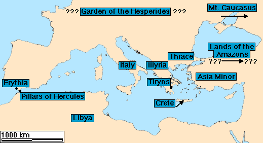
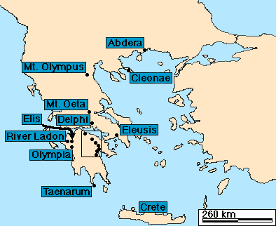
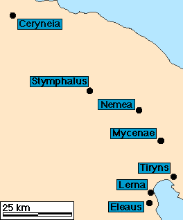

Map 1: Some of the places in Europe mentioned in the stories of Hercules.

Map 2: Some of the locations across Greece that Heracles visited. (See the map below for a closer view of the of the area within the rectangular box.)

Map 3: A close-up view of the Pelopennese. (The rectangular area in Map 2.)